在安卓上为chroot中的环境取得微小的OpenGL硬件加速效果，顺便记录下捡垃圾日记的折腾日记。
背景
淘机经历
我在二手市场以300元的价格淘来个一台lg v50 tinq。战损橙色，卖家说是自行车碾过，还可以开机使用。我也不嫌弃，买来过来用来体验arm下的linux环境也不错。一体会下现代手机处理器的性能。
着手刷机
手机到手，卖家已经是root过了。竟然root过了，那就换个系统把！通过XDA，我安装找到了 LineageOS 的安装包，而且附有内核的源码。（XDA教程和安装）。
先通过magisk安装twrp。进入twrp，刷入zip，再刷入解锁data分区工具。有多年搞机经验刷机还算顺利。就是新机型的A/B分区和data加密机制让我重刷了2，3次才找到技巧。而且lg v50 thinq这台机器默认是不开放bootloader，只有再检测到内核损毁或与系统版本不一致才会跳转bootloader。那只有用破解的官方工具包刷个内核和系统不一致的版本，才可以进bootloader。如果早知道，就找个好刷的机器了。
完成后我立即安装了自己添加了zstdcat的Linux Deploy ，这样就可以修复ubuntu22.04的安装。其实后来在LinuxDeploy项目的pr中才发现有人已经提交了请求，并且用他的复刻的代码编译即可用（哎呀，白干了）。LinuxDeploy项目地址
使用linuxdeploy在自己手机上就可以简单的搭建一个类linux的环境了哈。
开始安装Turnip
环境装备
建议系统版本，ubuntu22.04 , kali-rolling 。
“目前"我建议的mesa版本是20.0.5。因为这个mesa版本很新，所以建议用较新的系统编译，以免出现一系列的依赖问题。
先下载mesa用unzip解压。进入目录.
wget https://github.com/Mesa3D/mesa/archive/refs/tags/mesa-22.0.5.zip
unzip mesa-22.0.5.zip
cd mesa-mesa-22.0.5
并安装编译工具，这里要段时间。
apt build-dep mesa
展示： 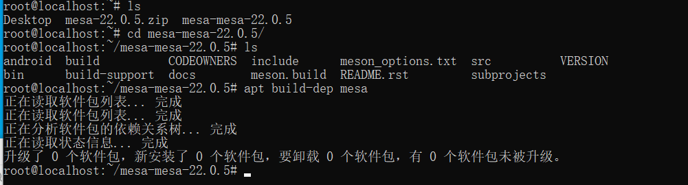
编译开始
加入编译条件，条件：
meson build -D platforms=x11,wayland -D gallium-drivers=swrast,virgl,zink -D vulkan-drivers=freedreno -D dri3=enabled -D egl=enabled -D gles2=enabled -D glvnd=true -D glx=dri -D libunwind=disabled -D osmesa=true -D shared-glapi=enabled -D microsoft-clc=disabled -D valgrind=disabled --prefix /usr -D gles1=disabled -D freedreno-kgsl=true
出自于：mesa-turnip-kgsl
展示： 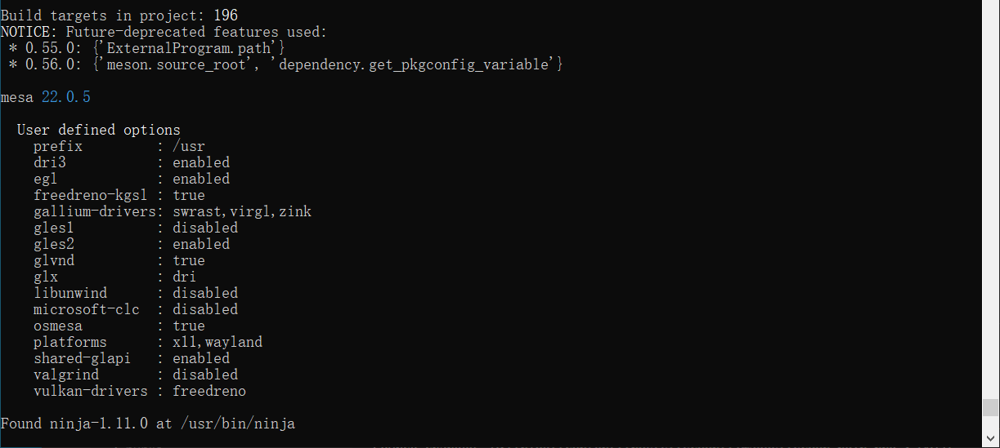
添加drm.h的目录,否则编译到一半会遇到找不到 drm.h。
export C_INCLUDE_PATH=$C_INCLUDE_PATH:/usr/include/libdrm/
进入build目录,开始编译安装
cd build
ninja install
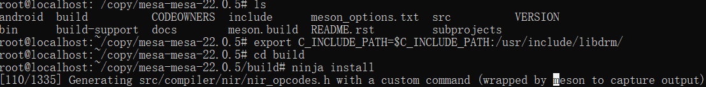
等待编译完成。
完成展示： 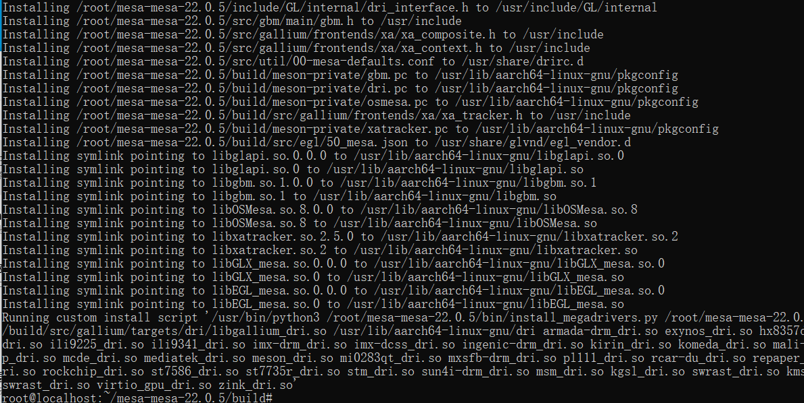
验证测试
逆向加速？
我们可以用
export MESA_LOADER_DRIVER_OVERRIDE=zink
export GALLIUM_DRIVER=zink
来指定mesa是用zink驱动。
export MESA_LOADER_DRIVER_OVERRIDE=
export GALLIUM_DRIVER=
返回默认驱动,或者关了你的控制台。
基础性能测试默认驱动：
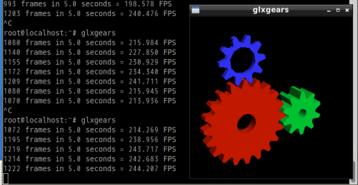
切换zink驱动： 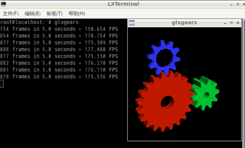
好像还降速了？？？本人使用的骁龙855，经过一段时间探究，其实是万年羸弱的arm小核心导致。
再次测试
这次我们让程序亲和大核心。
taskset -c 4-7 glxgears
基础性能测试默认驱动： 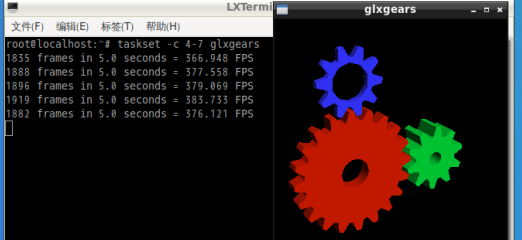
切换zink驱动： 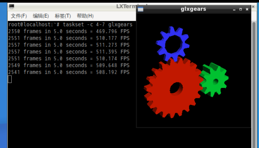
这次可以看到明显的大约超约100帧，经过实测分辨率压力越大，加速效果越明显。
较为简单的调优测试
我找到sys文件夹的cpu设备和gpu设备，把gpu最低频率拉高，并且cpu屏蔽小核心，调度器写userspace。
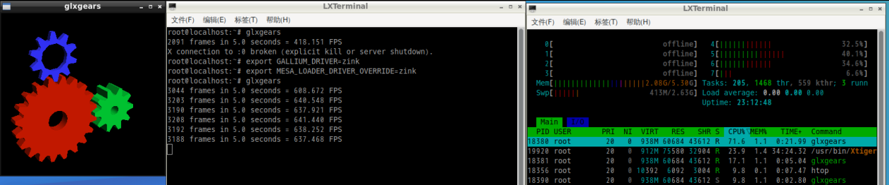
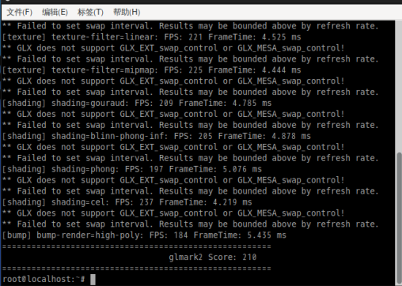
跑分没意思，chromium的使用
记得先指定zink驱动，再启动chromium。 如果你嫌麻烦可以把这2条写入 .bashrc 。
地址栏输入
chrome://flags
打开 重载设备列表，让chrome使用你这“莫名奇妙”得来的opengl硬件加速。
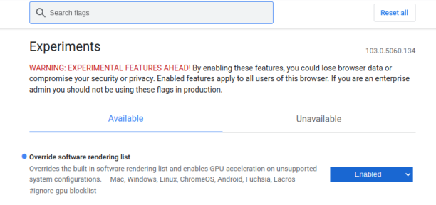
查看自己的硬件信息
chrome://gpu
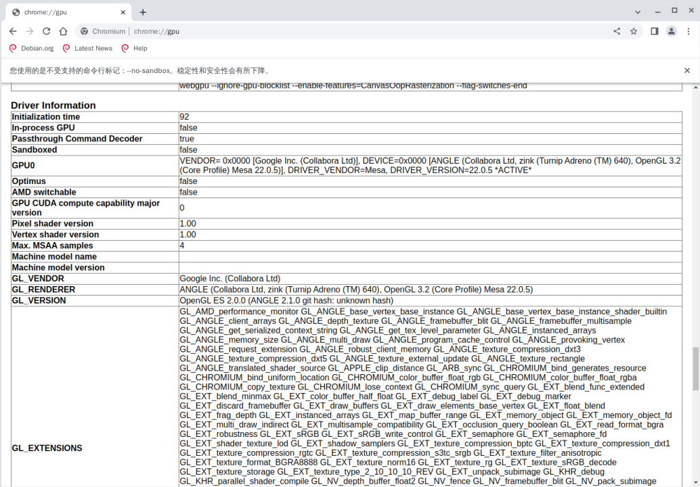
结束语
折磨人的不仅有不断冒出的段错误还有高数。